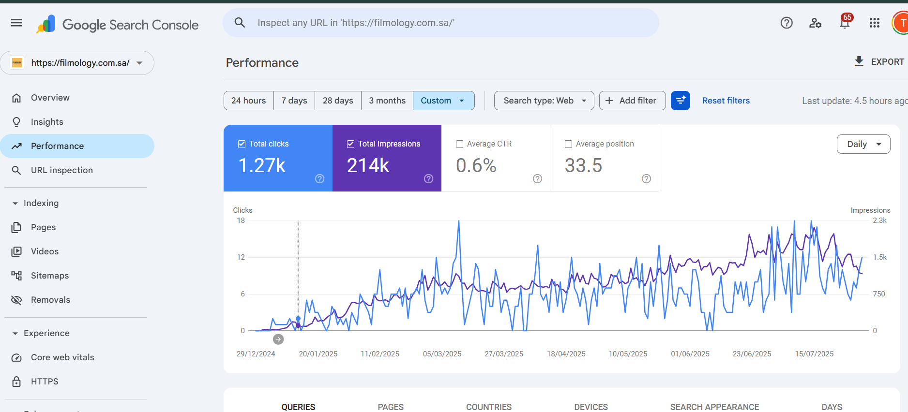

If you want to grow organic visibility, rank for high-intent keywords, and turn your website into a lead generation channel, let’s talk.
A full SEO growth system for a Saudi film production company, combining website rebuild planning, technical SEO, bilingual Arabic and English optimization, content strategy, on-page SEO, and backlink acquisition.
Organic Traffic Growth
Page-One Rankings
Languages: Arabic & English
Months Campaign
SEO Strategy · Technical SEO · Keyword Research · Content Strategy · Arabic SEO · English SEO · Internal Linking · Backlink Strategy
I was responsible for building and executing the full SEO strategy for Filmology. The website was created from the ground up with the development team handling the design and build, while I planned the SEO foundation, website structure, keyword strategy, content direction, and search growth roadmap.
My work covered SEO architecture, keyword research, Arabic SEO, English SEO, technical SEO, on-page optimization, content strategy, service page planning, internal linking, backlink strategy, and Google Search Console monitoring.
Filmology operates in a competitive Saudi film production market. Before the SEO campaign, the website had limited organic visibility and was not ranking strongly for the high-intent commercial keywords that potential clients use when searching for production partners, studio rental, commercial video production, production houses, and film equipment services in Saudi Arabia.
The goal was not only to increase traffic. The goal was to make Filmology visible for the right keywords: the searches connected to real business opportunities and lead generation.
The strategy was built around creating a complete SEO ecosystem, not just optimizing a few pages. Every important service needed a clear keyword target, strong search intent alignment, and supporting content.
I separated the keyword strategy into multiple search-intent groups to make sure Filmology could appear across different stages of the buyer journey.
Since the website was being rebuilt, I planned the SEO structure from the beginning. This included service hierarchy, keyword mapping, page priorities, internal linking direction, and bilingual page planning.
I worked on crawlability, indexation monitoring, URL structure recommendations, canonical review, mobile performance, structured data direction, and bilingual SEO considerations.
Key service pages were optimized around keyword clusters instead of single keywords. This included metadata, H1s, headings, content depth, entity coverage, internal links, image alt text, and CTA alignment.
The content strategy balanced commercial service pages with informational content to build topical authority. This helped Filmology appear for users researching production services as well as users ready to hire.
I supported the campaign with backlink acquisition focused on quality and relevance, helping strengthen trust and authority in a competitive commercial search space.
Within the campaign period, Filmology achieved strong organic growth and began ranking for high-intent production-related keywords across Arabic and English search results.
This screenshot shows Filmology’s organic search performance during the SEO campaign, including clicks, impressions, and visibility growth.

Filmology achieved first-page visibility for multiple business-critical keywords across production, studio rental, local Saudi searches, and Arabic commercial searches.
One of the strongest results was Filmology’s appearance in Google’s AI Overview for:
Film Studio Rental KSA
This showed that the SEO strategy was not only helping with traditional organic rankings, but also improving visibility in AI-powered search experiences.
Filmology did not just grow traffic. It became more visible at the exact moment potential clients were searching for film production companies, studio rental options, commercial production services, and production partners in Saudi Arabia.
The biggest win was market positioning. Filmology became easier to discover, easier to evaluate, and easier to contact through organic search.
By combining SEO architecture, bilingual keyword research, technical SEO, content strategy, on-page optimization, backlinks, and ongoing performance monitoring, Filmology became more visible across the commercial search ecosystem that mattered most to its business.
If you want to grow organic visibility, rank for high-intent keywords, and turn your website into a lead generation channel, let’s talk.